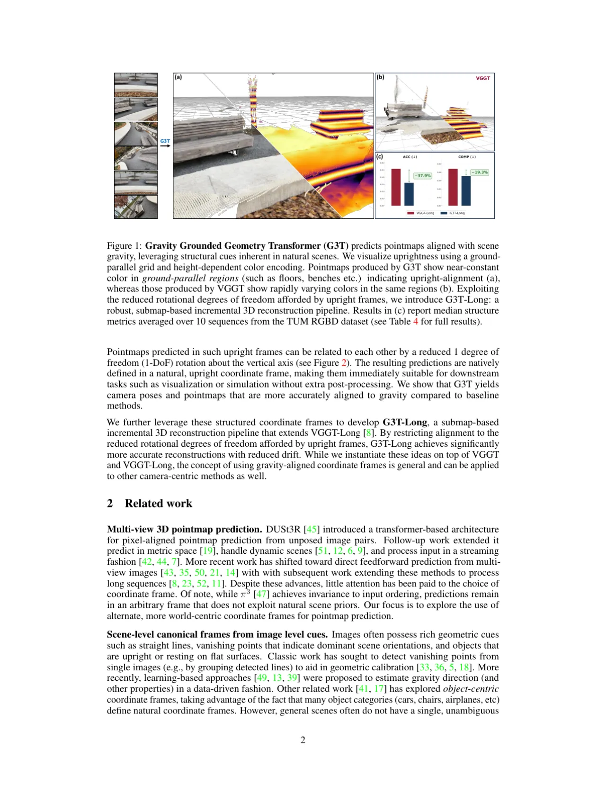
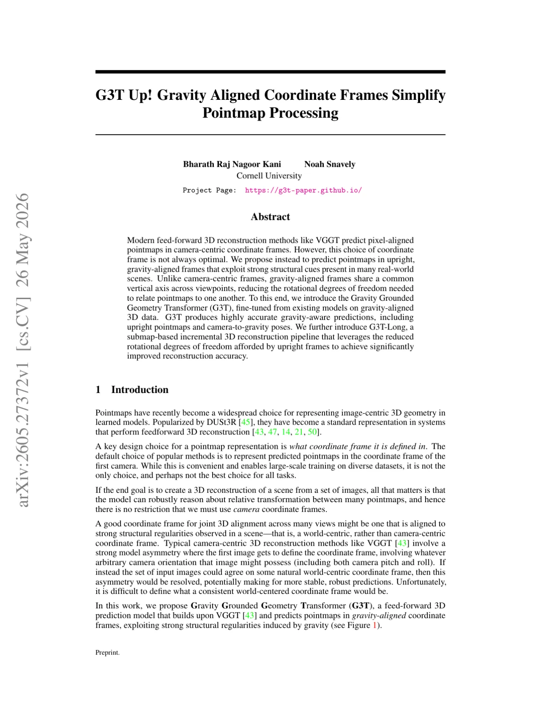
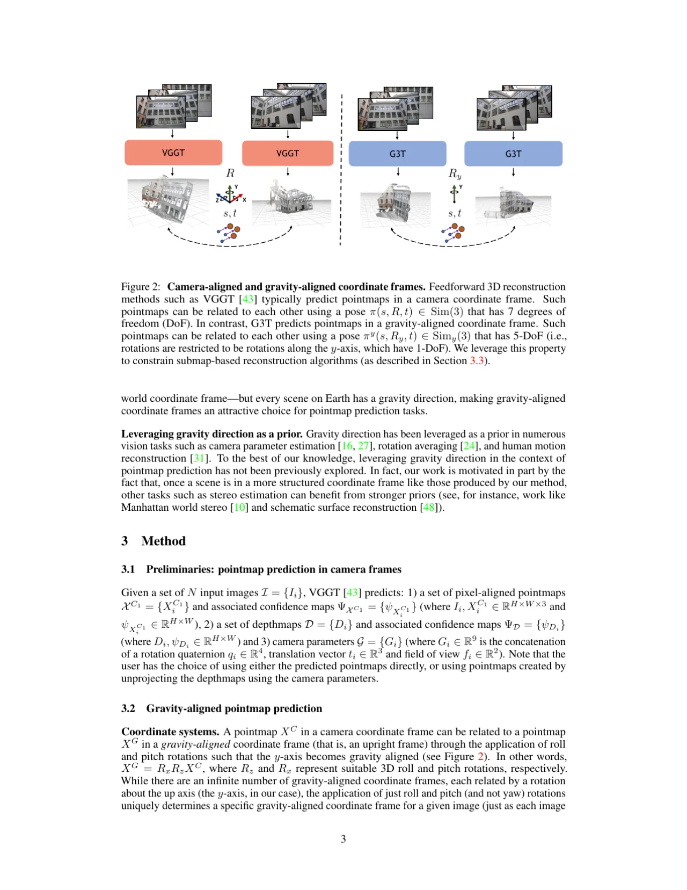
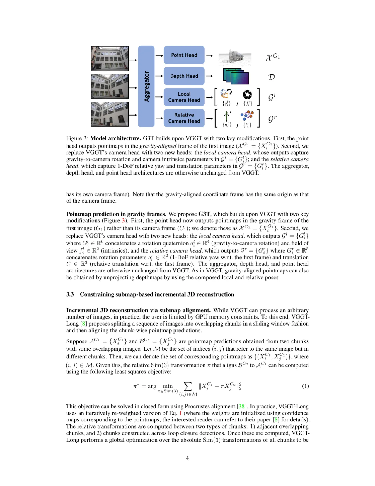
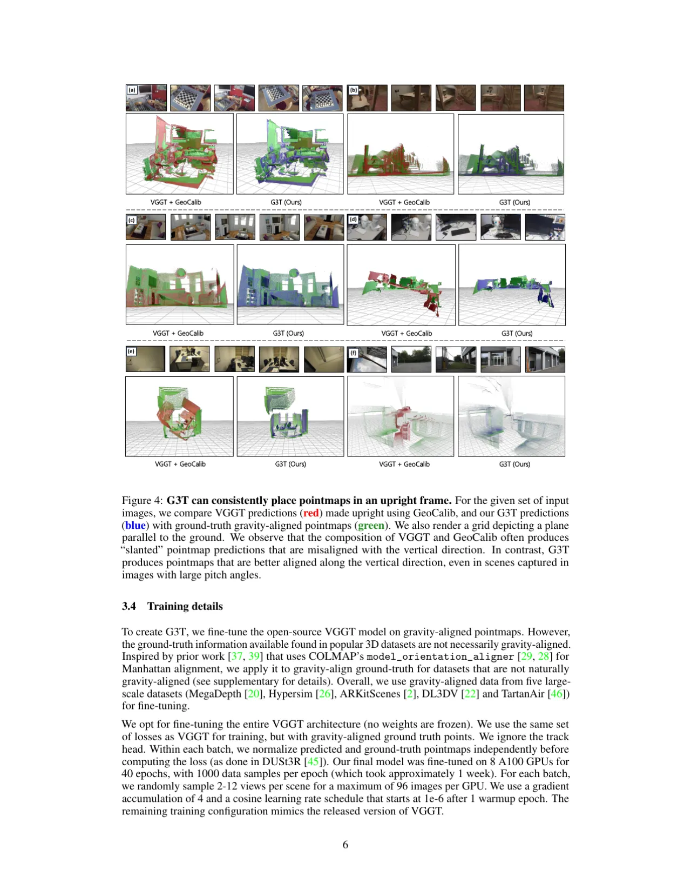
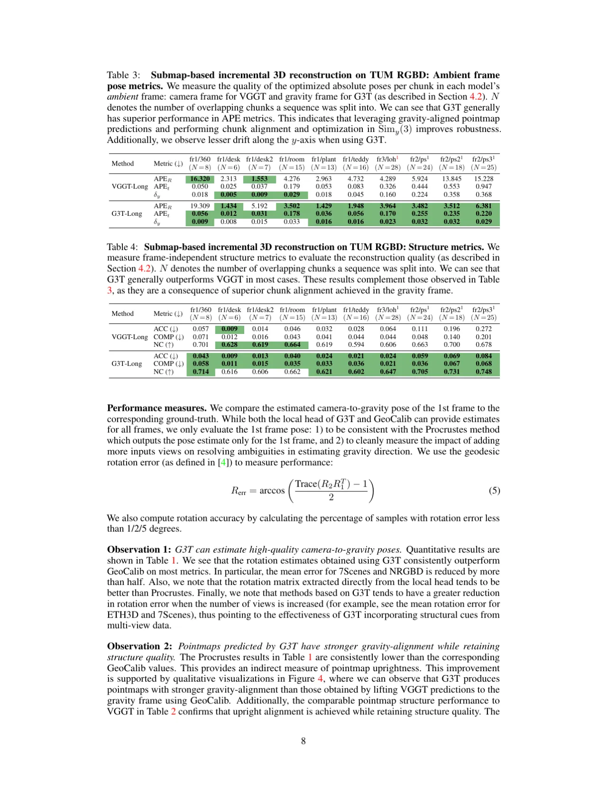
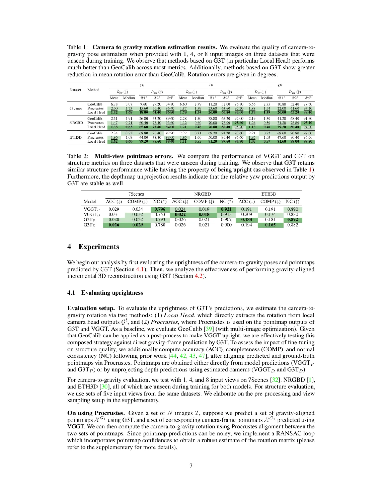

现代前馈式三维重建方法（如 VGGT）在相机坐标系中预测像素对齐的点图，但这种坐标系选择并非最优。 G3T 提出在直立的重力对齐坐标系中预测点图，利用真实场景中普遍存在的结构先验， 将跨视角的旋转自由度从 3 DoF 降低至 1 DoF（仅剩 yaw 旋转）。 在此基础上，G3T-Long 通过子图拼接的增量式重建流程，显著减少垂直漂移并提升重建精度。
当前主流的前馈式三维重建模型（DUSt3R、VGGT 等）在相机坐标系中预测点图， 要求 7 自由度（DoF）的刚体变换来对齐不同视角的点图，导致优化困难、累积误差大。 真实场景中"地面是水平的、墙壁是竖直的"这一结构先验几乎无处不在， 却被相机中心坐标系所忽视。
"We propose instead to predict pointmaps in upright, gravity-aligned frames that exploit strong structural cues present in many real-world scenes. Unlike camera-centric frames, gravity-aligned frames share a common vertical axis across viewpoints, reducing the rotational degrees of freedom needed to relate pointmaps to one another."


G3T 在 VGGT 的基础上进行微调，核心改动是将点图预测头和相机参数预测头适配到重力对齐坐标系， 并引入 GA-Procrustes（重力感知 Procrustes 对齐）算法约束子图拼接中的旋转方向。

传统 VGGT 的点图在相机坐标系 C1 中表示，G3T 改为在重力坐标系 G1（第一帧的重力对齐坐标系）中表示。 重力坐标系保持 y 轴朝上（与重力方向对齐），不同视角的点图可共享同一垂直轴。 Point Head 在训练时监督于由 COLMAP model_orientation_aligner 提取的真实重力方向标注。
对于相机姿态预测：Local Camera Head 预测每帧的 gravity-to-camera 旋转矩阵（将重力坐标系旋转至相机坐标系）， 以及相机内参（焦距、主点）。Relative Camera Head 仅预测 1 DoF 的 yaw 角和平移向量， 大幅简化了相对姿态估计问题。
标准 Procrustes 对齐需要 7 DoF 变换（包含完整的 3D 旋转）； 由于所有子图均在重力对齐坐标系中，对齐旋转只需绕 y 轴旋转（即 xz 平面上的 2D 旋转）， 从而将对齐问题简化为 5 DoF（1 DoF yaw + 3D 平移 + 1 缩放）。
在 G3T-Long 增量重建流程中：将输入长视频序列分成若干 overlapping chunk（子图）， 对每个子图独立运行 G3T 获得点图预测，再用 GA-Procrustes 将相邻子图对齐并融合， 最终输出全局一致的三维重建结果。环路闭合检测通过回环检测模块进一步提升全局一致性。

model_orientation_aligner 自动提取实验分两部分：(1) 评估 G3T 的直立预测精度（camera-to-gravity 旋转估计）； (2) 评估 G3T-Long 的增量式三维重建质量（姿态误差与结构指标）。 所有测试数据集均为训练时未见过的数据。
在 7Scenes、NRGBD、ETH3D 上测试 1/4/8 视角输入时的旋转误差（Rerr，°）和准确率（Racc@5°）。
与 GeoCalib（后处理重力估计）和 G3T-Procrustes（从点图回归）对比。
| 数据集 | 方法 | 1V Rerr↓ | 1V Racc@5°↑ | 4V Rerr↓ | 4V Racc@5°↑ | 8V Rerr↓ | 8V Racc@5°↑ |
|---|---|---|---|---|---|---|---|
| 7Scenes | GeoCalib | 6.78° | 74.80% | 6.60° | 76.80% | 6.56° | 77.60% |
| G3T-Procrustes | 2.00° | 96.40% | 1.87° | 97.20% | 1.88° | 97.20% | |
| G3T Local Head | 1.92° | 96.80% | 1.78° | 98.00% | 1.78° | 98.40% | |
| NRGBD | GeoCalib | 2.61° | 89.60% | 2.28° | 92.00% | 2.19° | 91.60% |
| G3T-Procrustes | 1.47° | 93.60% | 1.32° | 95.60% | 1.26° | 95.20% | |
| G3T Local Head | 1.33° | 94.00% | 1.21° | 95.20% | 1.13° | 94.00% | |
| ETH3D | GeoCalib | 2.24° | 97.20% | 2.22° | 97.60% | 2.21° | 98.00% |
| G3T-Procrustes | 1.96° | 98.00% | 1.95° | 95.60% | 1.85° | 96.00% | |
| G3T Local Head | 1.62° | 98.40% | 1.11° | 98.80% | 1.05° | 98.80% |
结论（Observation 1）："G3T can estimate high-quality camera-to-gravity rotation estimates, reducing mean errors by more than half compared to post-hoc gravity alignment with GeoCalib."
对比 VGGT 与 G3T 在三个数据集上的 ACC（精度）↓、COMP（完整度）↓、NC（法向一致性）↑。
| 数据集 | 模型 | ACC↓ | COMP↓ | NC↑ |
|---|---|---|---|---|
| 7Scenes | VGGT-P | 0.029 | 0.034 | 0.796 |
| VGGT-D | 0.031 | 0.032 | 0.753 | |
| G3T-P | 0.028 | 0.032 | 0.793 | |
| G3T-D | 0.026 | 0.029 | 0.780 | |
| NRGBD | VGGT-P | 0.024 | 0.019 | 0.921 |
| VGGT-D | 0.022 | 0.018 | 0.913 | |
| G3T-P | 0.026 | 0.021 | 0.907 | |
| G3T-D | 0.026 | 0.021 | 0.900 | |
| ETH3D | VGGT-P | 0.191 | 0.191 | 0.890 |
| VGGT-D | 0.209 | 0.174 | 0.880 | |
| G3T-P | 0.188 | 0.181 | 0.892 | |
| G3T-D | 0.194 | 0.165 | 0.882 |
结论（Observation 2）："Pointmaps predicted by G3T have stronger gravity-alignment while retaining comparable pointmap quality." 结构质量指标与 VGGT 基本持平，说明重力对齐微调未损坏三维重建能力。


以下为 Table 3 关键数据（TUM RGBD 各序列，Absolute Pose Error）：
| 方法 | 指标 | fr1/desk | fr1/room | fr1/plant | fr2/ps | fr2/ps2 | fr2/ps3 |
|---|---|---|---|---|---|---|---|
| VGGT-Long | APER (°)↓ | 2.31 | 4.28 | 2.96 | 5.92 | 13.85 | 15.23 |
| APEt (m)↓ | 0.025 | 0.179 | 0.053 | 0.444 | 0.553 | 0.947 | |
| δy (m)↓ | 0.005 | 0.029 | 0.018 | 0.224 | 0.358 | 0.368 | |
| G3T-Long | APER (°)↓ | 1.43 | 3.50 | 1.43 | 3.48 | 3.51 | 6.38 |
| APEt (m)↓ | 0.012 | 0.178 | 0.036 | 0.255 | 0.235 | 0.220 | |
| δy (m)↓ | 0.008 | 0.033 | 0.016 | 0.032 | 0.032 | 0.029 |
注：fr1/360 序列 G3T-Long 的 APER（19.31°）略高于 VGGT-Long（16.32°），为本文中未击败基线的情形，原文如实呈现。 除此之外，G3T-Long 在 9/10 个序列上均优于 VGGT-Long，特别是垂直漂移 δy 的改善尤为显著 （fr2/ps3：VGGT-Long δy=0.368m vs G3T-Long δy=0.029m，改善约 12×）。
"G3T may not produce good upright-aware predictions in scenes with ambiguous structural cues." 例如，在缺少上下文的情况下，近距离拍摄地板或墙壁时， G3T 难以正确估计直立方向，产生倾斜的点图（论文 Figure 5 的失败案例）。
对于竖向物体（如橱柜）的水平旋转图像，模型可能产生方向错误的点图。 "G3T can struggle to estimate upright pointmaps from close-up images of floors and walls if additional unambiguous context is not present."
G3T 的整个设计假设重力是场景中的主要结构先验。 在室外无参考平面场景、航拍图像、或水下/太空环境中，重力对齐假设可能不成立， 此时 G3T 的优势将不适用，可能退化为普通坐标系预测。
训练 G3T 需要对所有点图数据集使用 COLMAP 的 model_orientation_aligner 提取重力方向真值， 这对没有预计算 COLMAP 重建的数据集来说增加了数据准备成本， 可能限制训练数据的规模和多样性。
